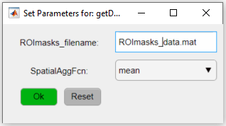
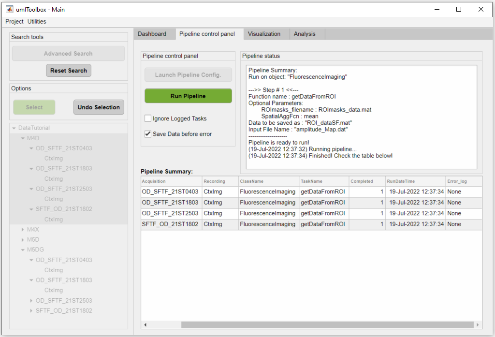

Once ROIs are created, one can then extract and aggregate the data from individual ROIs across multiple recordings. First, the data extraction from ROIs allows the exclusion of non-pertinent information. Secondly, the (spatial) aggregation of ROI data adds an extra layer of data reduction. Both operations represent a crucial step in an imaging project where meaningful values are created that will ultimately be used for group comparisons and statistics.
Main steps of a typical imaging project to underscore the role of ROI extraction and aggregation.
a) Processing steps for a single experiment where the extraction and aggregation of ROI data yields ROI values.
b) The ROI values of each recording session is grouped for comparisons.
Before extracting the data from the ROIs, we assume that the following procedures were previously executed:
umIToolbox('C:/FOLDER/projectfile.mat');
Then, go to the Pipeline control panel tab and highlight the recordings to extract. Here, we will extract the data from all Resting State recordings from the mouse M4D:

Click on Select to confirm selection and on Launch Pipeline Config to open the pipeline configuration app.
Select the FluorescenceImaging object:

In the Pipeline Configuration app, select the function getDataFromROI (step 1), add it to the pipeline (step 2), select the function (step 3) and click on Set Options button (step 4):

The function getDataFromROI has two parameters: the file name containing the ROI information (i.e. the ROImasks_<NAME>.mat file) and the spatial aggregation function to be applied (SpatialAggFcn). Here we will use the ROIs stored in ROImasks_data.mat file and the ROI pixel values will be averaged using the mean for the SpatialAggFcn parameter:
Now, select the FluorescenceImaging object:
And, finally, select the data to be extracted. Here, we will extract the ROI data from functional connectivity data stored in SPCMap.dat file:
Finally, back in the main GUI, in the Pipeline control panel tab, click on Run Pipeline to extract the ROI data. The extracted and aggregated data from the ROIs are stored in the file ROI_data.mat:
A
A